Amor
Nos mueve el amor y la compasión hacia los adultos mayores, y nos comprometemos a brindarles un hogar seguro, confortable y lleno de amor sin recibir ningún beneficio económico a cambio.
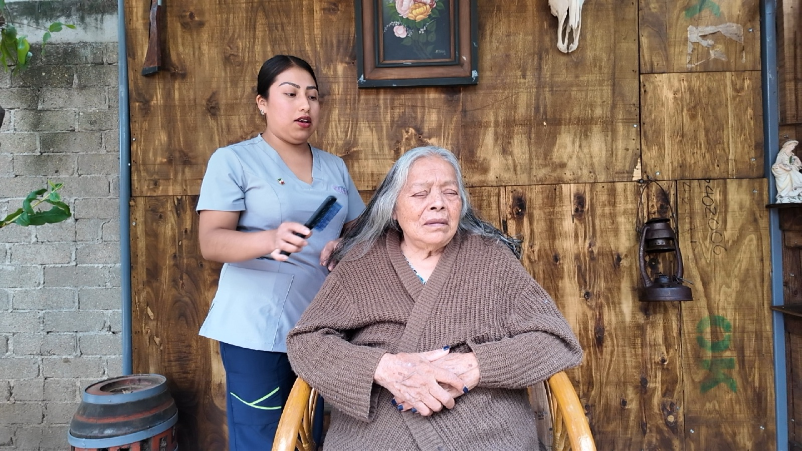
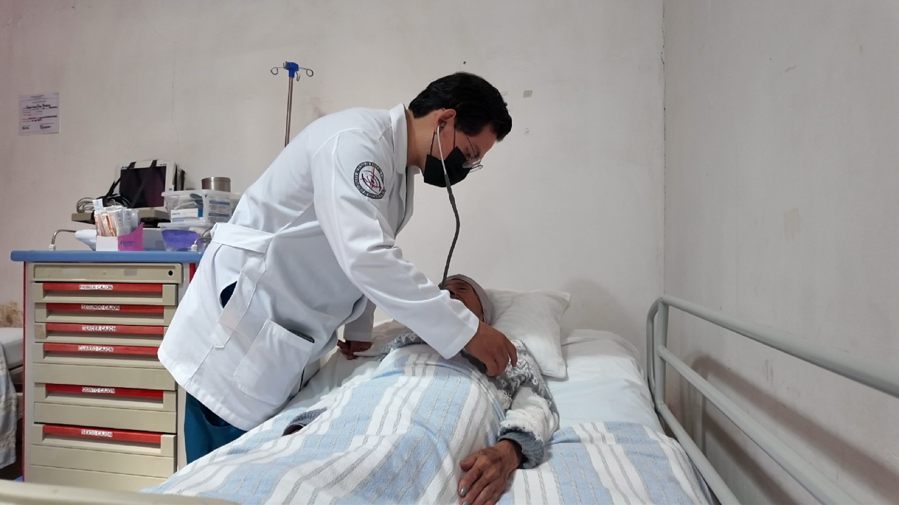
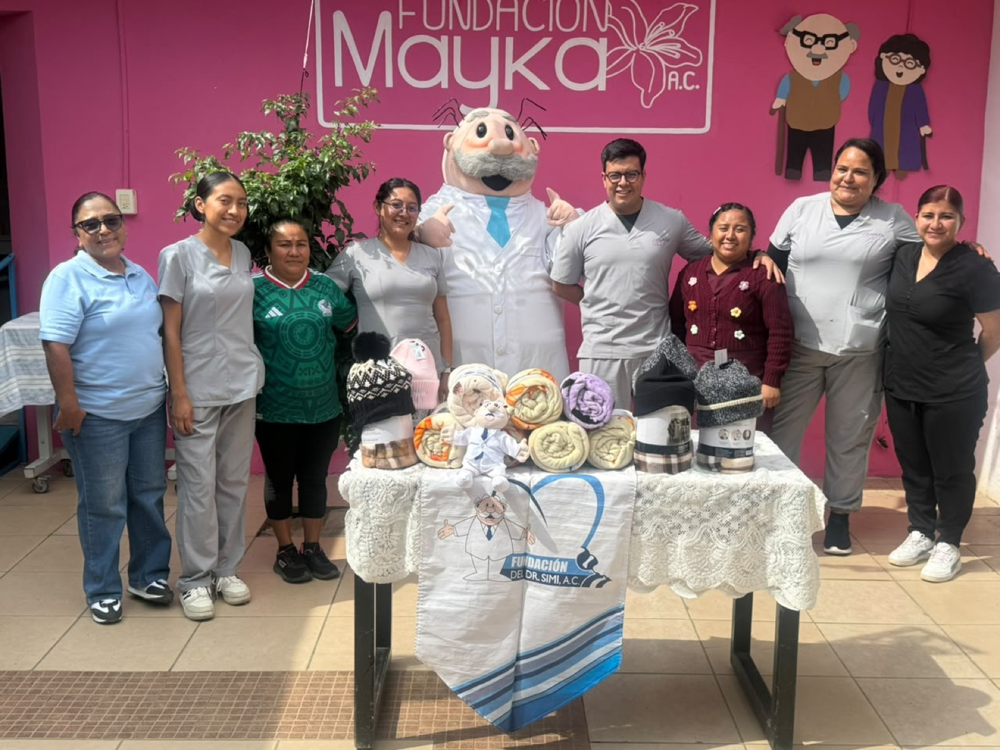
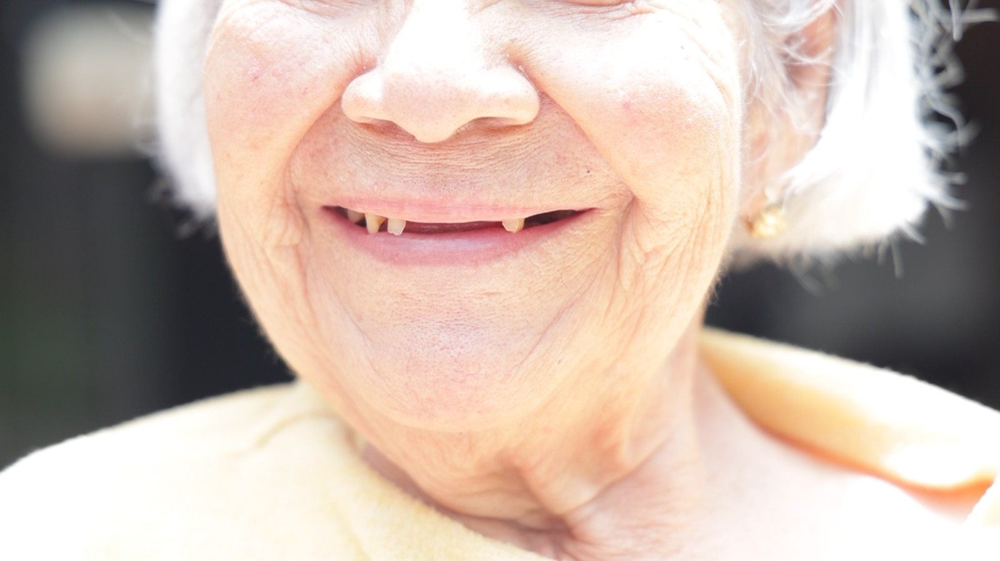
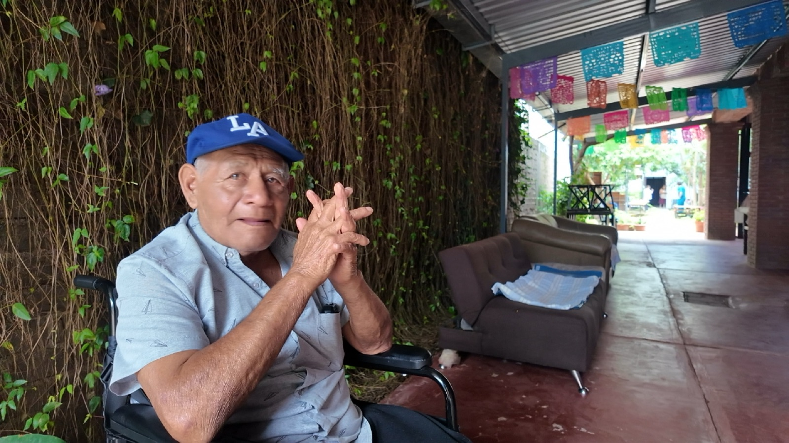
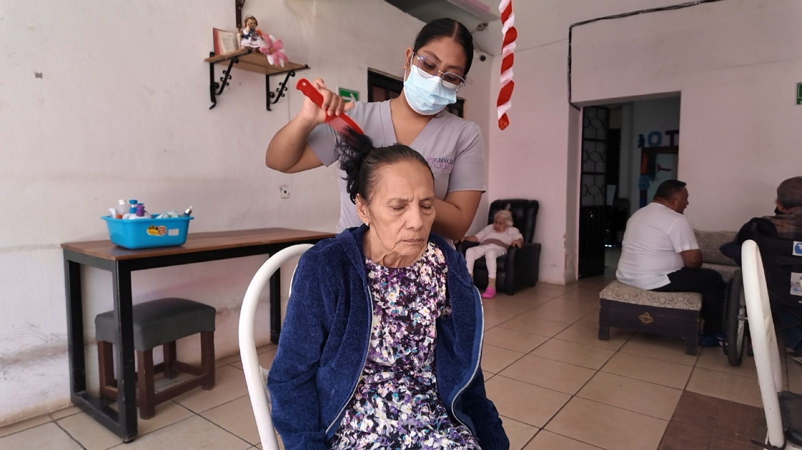
Somos una organización no gubernamental que se dedica a ayudar a los adultos mayores en situación de vulnerabilidad. Creemos que todas las personas merecen una vida digna y por eso trabajamos arduamente para brindarles la ayuda que necesitan.
En nuestra fundación no tenemos lujos: cada centavo que recibimos se destina a pagar los sueldos de nuestro equipo de trabajo y a mantener nuestras instalaciones en óptimas condiciones para seguir ayudando a quienes más lo necesitan. Contamos contigo para seguir haciendo la diferencia en la vida de nuestros adultos mayores.
¡Dona ahora!La Fundación Mayka A.C. es un hogar para el corazón. Desde nuestro nacimiento en el año 2018 hemos dedicado nuestros esfuerzos a brindar cuidado y atención a aquellos que más lo necesitan: nuestros queridos adultos mayores.
Nos enorgullece ser líderes en el sector y contar con un equipo de profesionales comprometidos, inspirados por la pasión y liderazgo de nuestro presidente, el Enf. José Luis Hernández, así como por el compromiso y dedicación de nuestros médicos, Margarita Toledo y Guiexuuba Donaji Hernández.
Con el apoyo invaluable de generosos donadores, como SIMI, Fundación Emprendedores y Sandi, hemos sido capaces de expandir nuestros servicios y alcanzar nuevas metas.
En Fundación Mayka A.C. trabajamos juntos para crear un futuro lleno de esperanza y bienestar para nuestros adultos mayores. Agradecemos de todo corazón el apoyo de nuestros donadores, quienes nos permiten seguir adelante con nuestra misión de ayudar a quienes más lo necesitan.
La fundación nació de la preocupación por el bienestar de los adultos mayores en nuestra comunidad, al ver que muchas veces son olvidados o ignorados. La idea surgió de la necesidad de brindarles un lugar seguro y confortable para vivir, y un ambiente en el que se sientan valorados y cuidados.
La fundación se consolidó gracias al esfuerzo y dedicación de un grupo de personas comprometidas con la causa. Con la colaboración de profesionales en diversas áreas, se estableció una estructura sólida para lograr los objetivos de la organización.
Gracias al apoyo de la comunidad y de donantes comprometidos, establecimos relaciones con empresas y organizaciones para ofrecer más recursos y servicios. Ampliamos los servicios para llegar a más personas y nos expandimos a diferentes áreas geográficas.
Celebramos con gratitud el impacto positivo en la vida de tantos adultos mayores. Agradecemos a nuestros donantes y voluntarios, parte fundamental de nuestro éxito y compromiso en la lucha por una vejez digna para todos.
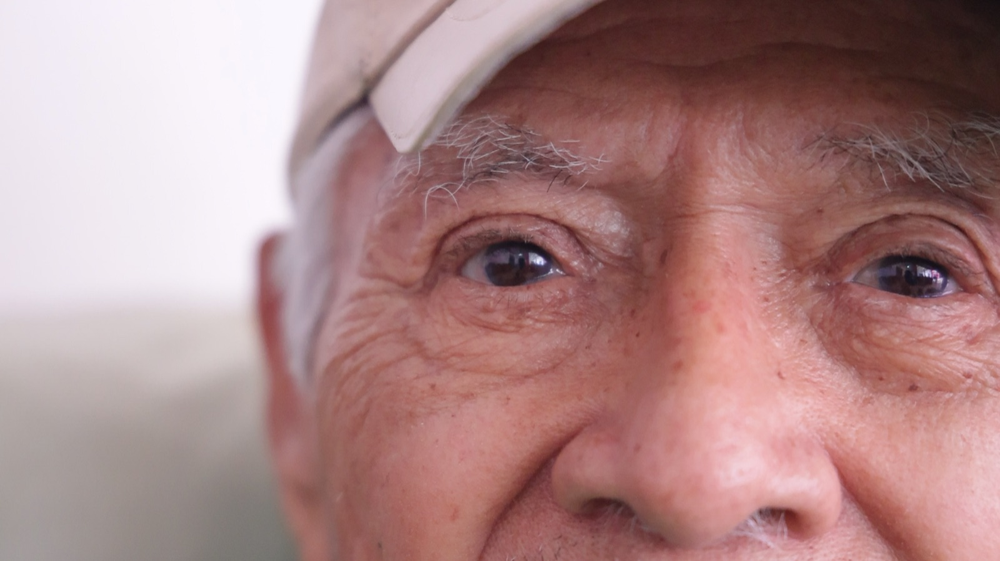
Brindar el mejor cuidado y calidad de vida a los adultos mayores más vulnerables, fomentando su bienestar emocional, físico y social.
Ser reconocidos como una organización líder en el cuidado de los adultos mayores, brindando servicios de calidad y excelencia a nivel nacional.
Nos mueve el amor y la compasión hacia los adultos mayores, y nos comprometemos a brindarles un hogar seguro, confortable y lleno de amor sin recibir ningún beneficio económico a cambio.
Ayudamos a los adultos mayores a mejorar su calidad de vida, ofreciéndoles servicios y actividades que promuevan su bienestar físico, emocional y social sin buscar ganancias económicas.
Valoramos y promovemos el contacto con la naturaleza, fundamental para la salud y el bienestar de los adultos mayores. Por eso trabajamos para crear entornos naturales y sostenibles en nuestras estancias.
Todos los adultos mayores merecen vivir con dignidad, respeto y autonomía. Les brindamos un trato justo y digno, y garantizamos su acceso a servicios y recursos para vivir de manera independiente, sin lucro alguno.
Hemos atendido a +2500 adultos mayores, con +50 voluntarios activos y +5 años de servicio a la comunidad.
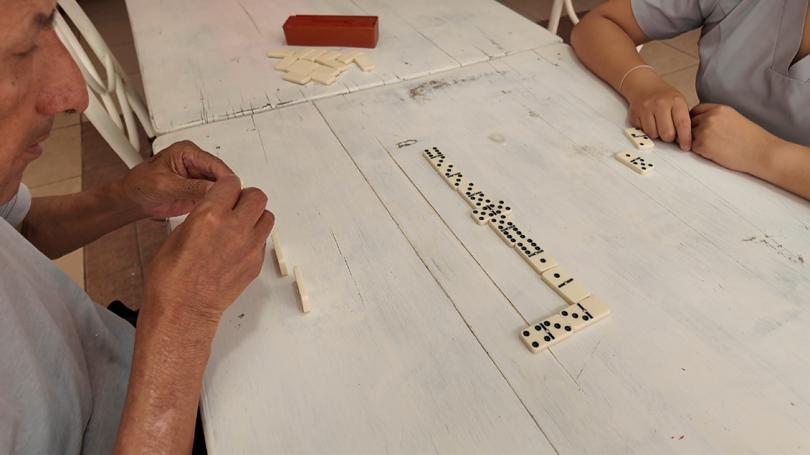
En nuestra búsqueda por mejorar la calidad de vida de los más necesitados, sabemos que no podemos hacerlo solos. Gracias a nuestros voluntarios hemos establecido alianzas con diversas organizaciones y mejorado nuestros programas de atención. Todo lo que hacemos es gracias a su dedicación y entrega desinteresada. Juntos podemos hacer una gran diferencia.
Quiero ser voluntarioHemos establecido alianzas estratégicas con diversas organizaciones. En 2021 recibimos una donación importante de SIMI que nos permitió fortalecer nuestros programas de atención. Todo lo que hacemos es sin fines de lucro: nuestra única motivación es ofrecer una vida digna y feliz a nuestros adultos mayores.
DonarNuestro compromiso con la comunidad de adultos mayores.
En nuestro esfuerzo constante por mejorar la vida de los adultos mayores, hemos establecido alianzas estratégicas con diversas organizaciones. En el año 2021 recibimos una donación importante de SIMI, lo que nos permitió fortalecer nuestros programas de atención y mejorar la calidad de vida de nuestros residentes.
Todo lo que hacemos es sin fines de lucro, ya que nuestra única motivación es ofrecer una vida digna y feliz a nuestros adultos mayores.
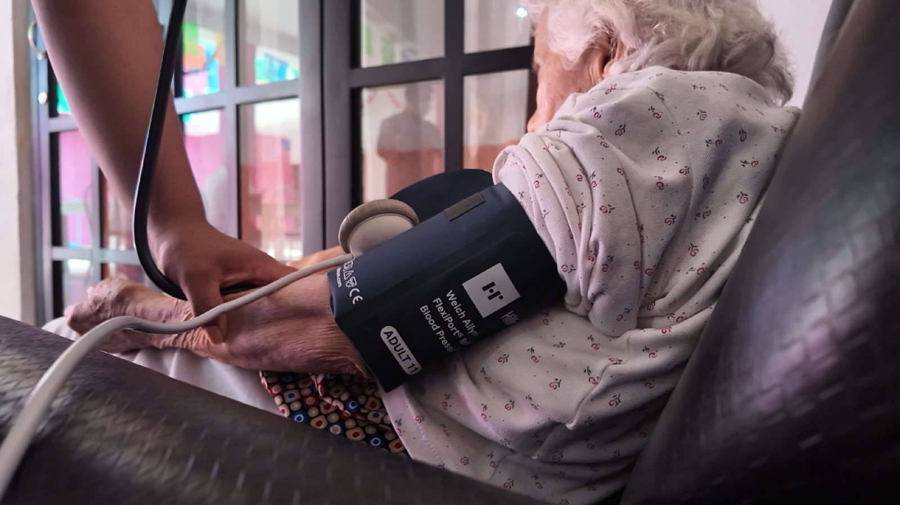
En la Fundación Mayka A.C. nos esforzamos por brindar la mejor atención posible a nuestros residentes. En 2018 obtuvimos nuestro aviso de funcionamiento de responsables sanitarios por medio de la COFEPRIS, y en 2022 la certificación del INAPAM, lo que nos permitió mejorar aún más la calidad de nuestro servicio.
COFEPRIS 2018INAPAM RUI1044/2022
Para nosotros cada residente es importante, y trabajamos para que se sienta valorado y cuidado en todo momento.
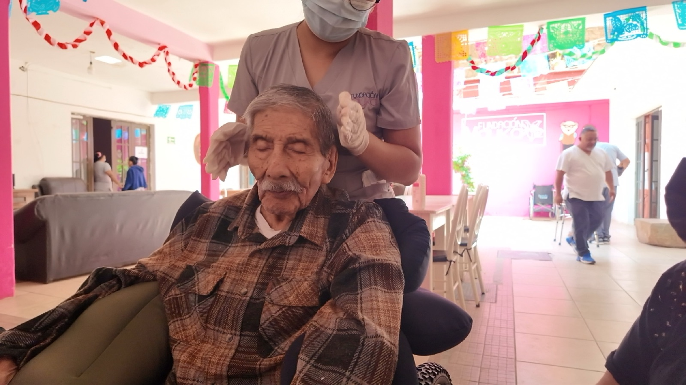
En nuestra trayectoria de cinco años hemos logrado grandes cosas gracias al apoyo de nuestra comunidad. En particular, nos enorgullece haber brindado un hogar seguro y acogedor a residentes como Delfino, quien fue abandonado y ahora recibe el 100% de nuestro cuidado.
Nos alegra saber que hemos marcado una diferencia en su vida y en la de muchos otros adultos mayores.
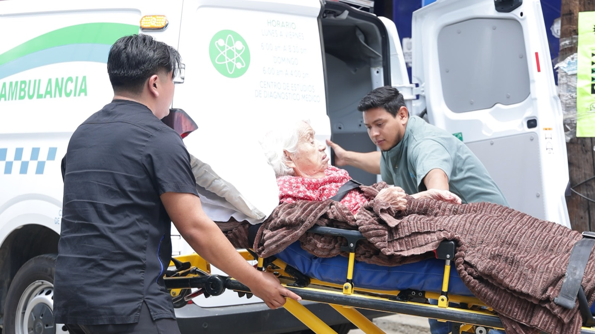
La salud de nuestros residentes es nuestra máxima prioridad. Por eso obtuvimos el registro y certificación en COFEPRIS, lo que nos permite llevar a cabo trámites permanentes con instituciones de salud y asegurarnos de que nuestros residentes estén siempre al día en su cuadro de vacunación.
COFEPRIS 23-000033995
Nuestros adultos mayores son una población vulnerable y queremos que se sientan protegidos y vivan con la tranquilidad que merecen.
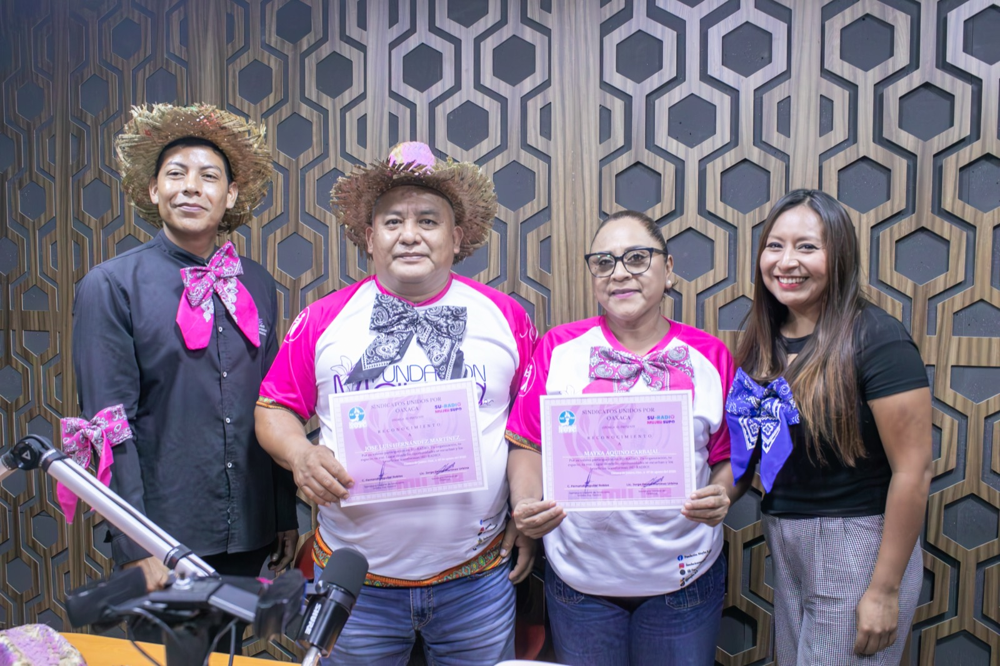
Este año fuimos reconocidos por nuestra labor, una prueba de nuestro compromiso con la atención y el bienestar de las personas mayores en nuestra comunidad.
Nos hemos enfocado en difundir y promover los beneficios de los servicios de salud que se brindan a través del Comité Estatal de Atención al Envejecimiento de Oaxaca. Nuestra inclusión en este Comité es una muestra de nuestro trabajo y dedicación.
¡Únase a nosotros y juntos hagamos la diferencia!
Fue creada en la casa de la Sra. Inés Martínez, inicialmente para cuidar de ella y de dos residentes más, ante la necesidad de crear un espacio seguro y agradable. Los residentes conviven permanentemente y realizan actividades lúdicas, sociales y culturales, apoyados por un equipo multidisciplinario especializado en brindar una adecuada calidad de vida y una vejez digna.
Ante la creciente necesidad de albergar a más solicitantes se creó esta segunda casa, para continuar con la labor en beneficio de los adultos mayores. Forma parte de la Fundación Mayka A.C., organización con autorización del SAT para recibir donativos en especie o económicos.
Nuestro equipo está conformado por área médica, enfermería, terapia física, terapia ocupacional, nutrición y personal de apoyo. Todos cuentan con certificaciones y especializaciones en sus áreas, lo que les permite brindar una atención integral y de calidad a nuestros residentes.
Nuestro personal está en constante formación y actualización en prevención de enfermedades, nutrición y actividad física y mental, entre otros temas. Nos esforzamos por brindarle un ambiente de trabajo seguro, justo y respetuoso, para que pueda ofrecer la mejor atención posible.
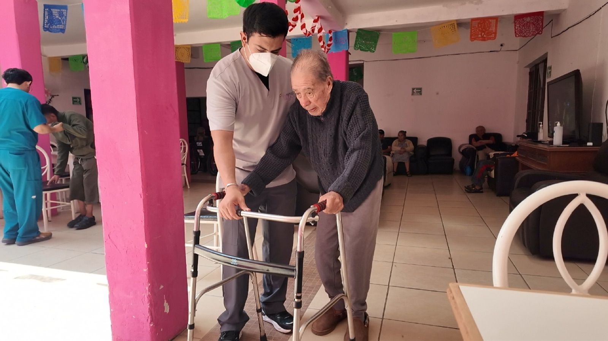
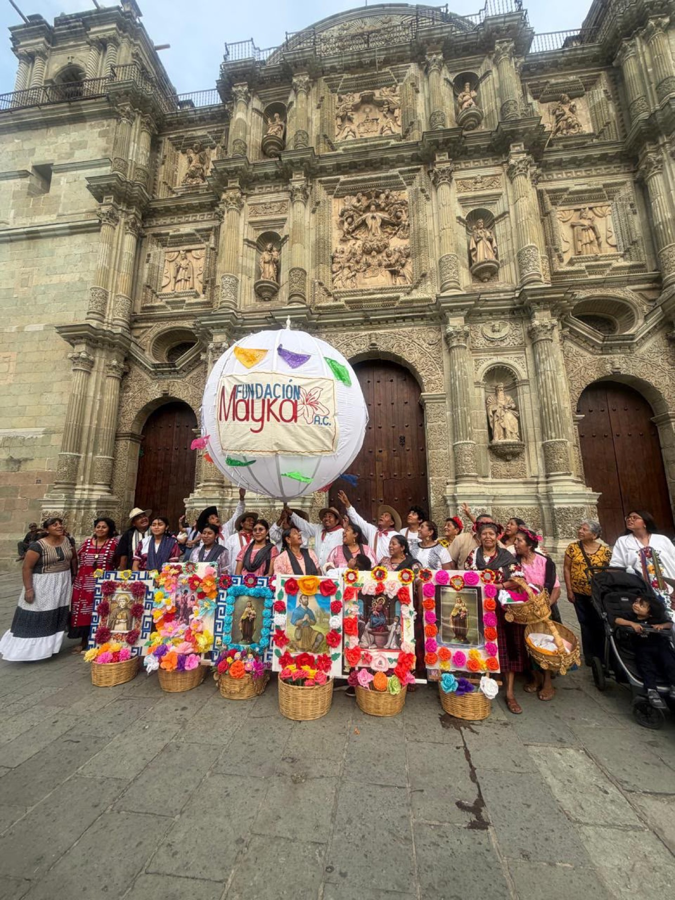
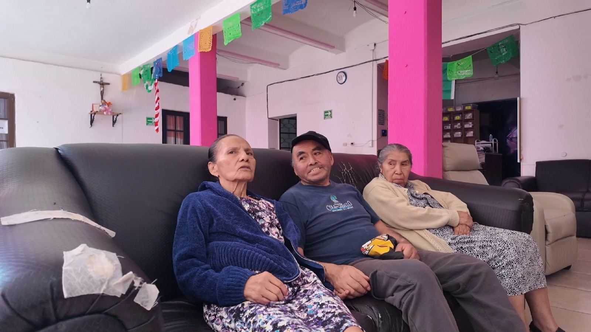
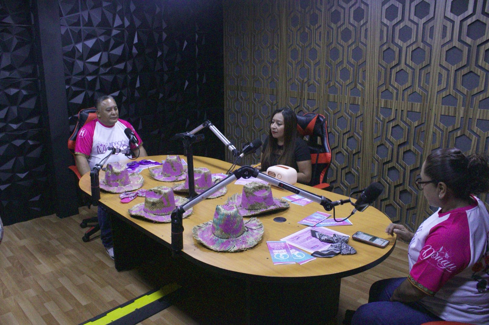
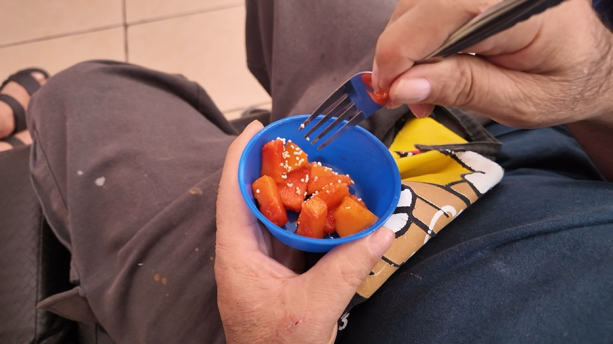
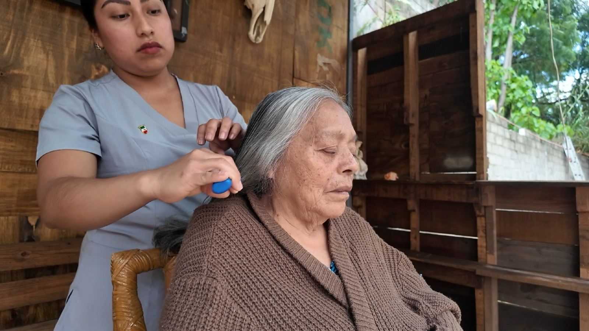
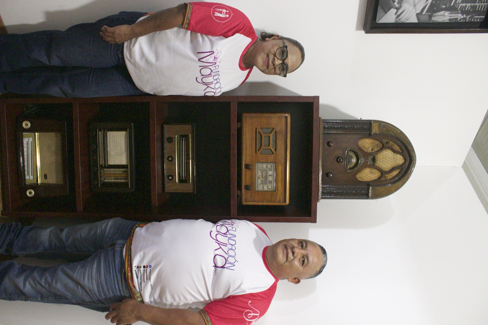
La labor que realizamos no sería posible sin el apoyo de nuestros donadores. Cada aporte, por pequeño que sea, es fundamental para mantener nuestros programas y servicios para los adultos mayores.
Como organización sin fines de lucro, nos enfocamos en brindar un espacio seguro y confortable para nuestros residentes y en ofrecer servicios de calidad que promuevan su bienestar físico y emocional. Si bien hemos recibido donaciones importantes de empresas y organizaciones como SIMI, necesitamos de manera constante el apoyo de nuestra comunidad.
Cada donación es una muestra de confianza en nuestro trabajo y nos motiva a seguir adelante. Agradecemos de antemano a todos los que consideren apoyar nuestra causa.
Organizaciones que han hecho posible nuestro trabajo.
Nuestra fundación está dedicada al bienestar de adultos mayores: ofrecemos programas y servicios para mejorar su calidad de vida. Contamos con un equipo apasionado y comprometido. Trabajamos por una sociedad más justa y equitativa. Juntos, por un futuro mejor para nuestros mayores y para todos.